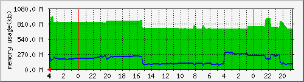
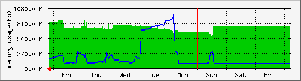
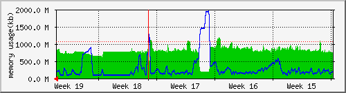
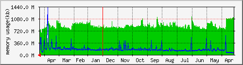

.. Memory .....
上次統計更新時間: 2007 年 五 12 日 星期六 4:02
每日 圖表 (5 分鐘 平均)

|
最大 |
平均 |
目前 |
| Memory Actv: |
941 M (87.7%) |
782 M (72.8%) |
846 M (78.8%) |
| Memory Free: |
298 M (27.8%) |
170 M (15.8%) |
198 M (18.5%) |
每週 圖表 (30 分鐘 平均)

|
最大 |
平均 |
目前 |
| Memory Actv: |
876 M (81.6%) |
739 M (68.8%) |
854 M (79.5%) |
| Memory Free: |
953 M (88.8%) |
212 M (19.8%) |
194 M (18.1%) |
每月 圖表 (2 小時 平均)

|
最大 |
平均 |
目前 |
| Memory Actv: |
1188 M (110.6%) |
795 M (74.0%) |
841 M (78.3%) |
| Memory Free: |
1942 M (180.8%) |
278 M (25.9%) |
179 M (16.7%) |
每年 圖表 (1 天 平均)

|
最大 |
平均 |
目前 |
| Memory Actv: |
1152 M (107.3%) |
870 M (81.0%) |
737 M (68.6%) |
| Memory Free: |
1426 M (132.8%) |
164 M (15.3%) |
146 M (13.6%) |
| 綠色 ### |
Memory 狀態 --- 一分鐘平均值 |
| 藍色 ### |
Memory 狀態 --- 五分鐘平均值 |